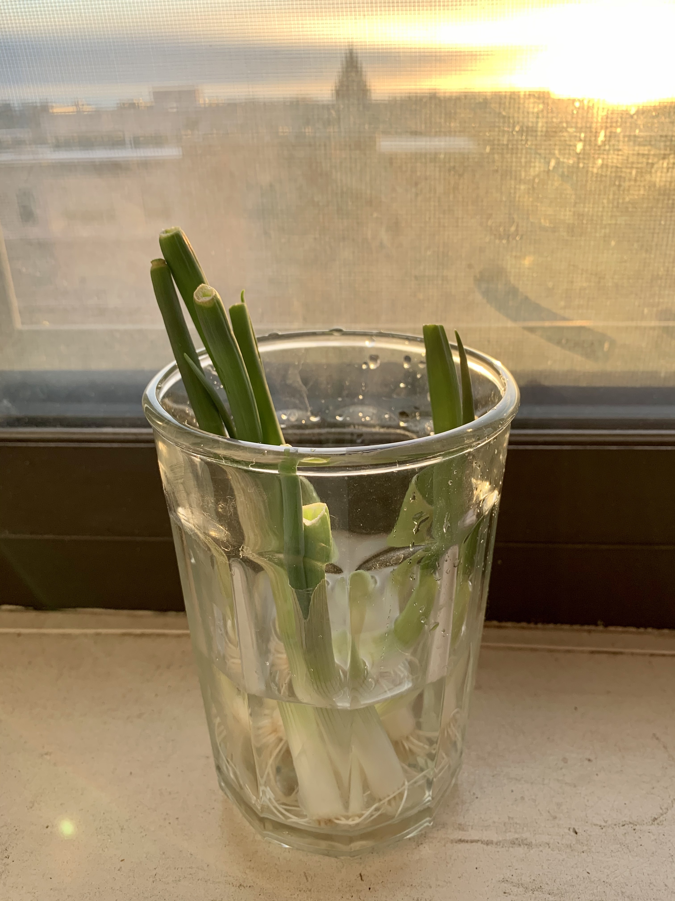

喜欢的东西呢，都是扎堆来的～
生活：试图实现小葱自由
这周开始尝试水培小葱～小葱长得很快呢～不知道这回可不可以实现小葱自由

书：Letters from a Stoic 和 《昨日世界》
weekly digest终于在阔别了n周之后终于又有书可以分享了😂看书就是这样，“不看则已，一看，就好多本”（什么鬼
Letters from a Stoic
和斯多葛学派 (Stoic) 的缘分始于读阿兰·德波顿的一本哲学科普书《哲学的慰藉》（这本书也蛮好看的，比较轻松），说到斯多葛学派时他引用了斯多葛学派哲学家塞内加 (Seneca) 的一句话:
何必为部分生活而哭泣，君不见全部的人生，都让人潸然泪下。
当时就觉得OMG🙀说得太好了，就种下了要多了解这个学派的种子。不过这一晃就是好几年😂而近些年斯多葛学派好像越来越火了～我先是听说了一本畅销书The Obstacle is the Way，后来又知道了一个app，就叫Stoic，里面有很多Stoic的练习和quotes，我还蛮推荐的。
扯远了。这本Letters from a Stoic是Seneca的一个书信集，不过只有他寄给别人的信，对象主要是一个叫Lucilius的人。从书信集了解一个哲学的感受是我曾经没有体验过的，它没有什么“系统”，但是有的是那种朋友的关怀，恩师的教导，有一种不一样的温度。外加我一直想有一个笔友，但是在这个时代太难了，读这本书信集有时候觉得我有了一个千年以前的笔友，而且还是特别具有智慧的一位，就经常觉得好感动。另外塞内加的文笔真的很好（当然，看的是英文翻译版，所以可能也不是他真实的文笔），说的有点俗那真的是金句不断，读来真的是一种享受。
说两句从这本书里我理解到的斯多葛学派吧～我觉得斯多葛学派是非常相信人力量的一个学派，而且非常追求人的“尊严”。这种尊严要求我们要克服掉浅层的肉体的欲望（主要就是物质的欲望）而去追求智慧，而智慧包括了不随大流，节俭生活，不害怕死亡，不滥用感情，真诚的cultivate友谊等等等等，都是我非常认同的人应该具有的美德。另外斯多葛学派甚至还有平等的思想，要知道当时的罗马拥有奴隶是很正常的，而塞内加说：
I propose to value them according to their character, not their jobs. Each man has a character of his own choosing; it is chance or fate that decides his choice of job.
读这本书我用了一种之前没有过的方式，每天早上起来读一篇，所以前后一共读了三个月。早上起来在日出的陪伴下静静地读一封信真是让人心情平静，而且信里充满了智慧，有什么比这样开启一天更美好的吗？

《昨日世界》
这周看完的另一本书是茨维格的《昨日世界》，前后也读了蛮久，中间搁置了一段时间。
在此之前我对茨维格的印象还停留在初中（？）课本里说两个科考队抢占南极点的故事（其实《一个陌生女人的来信》是看过的，但是印象并不深刻lol），而且当时我其实真的非常非常非常不喜欢那篇文章😳。我这个人的审美一向倾向于比较朴实的东西，但是茨维格的语言可以说是非常浪漫主义，让我觉得非常浮夸，感觉他就是那种非常会包装，很会“添油加醋”的那种作家。
不过看了这本书之后我的感受有了很大的改观。这本书记录了从他的少年时代（一战之前）一直到二战的生活，经历了两次世界大战的他可谓是心力交瘁，真是被迫地见证了很多历史。这才发现在他看似“浮夸”语言的背后是一颗赤子之心：对于自由，理性，和平真挚地向往，对于欧洲的热爱和舍弃不掉的关心和在意。这使得他“浮夸”的语言变成了真诚的语言，虽然美学上还是不最欣赏这样的表达，但是这种真诚我是非常喜爱的。可能也是因为这种真诚，这种100%，200%的真诚，才使得他最后虽然逃离了希特勒的魔爪还是选择了自杀了解自己的一生。
这本书虽说叫做“昨日世界”，真正的“昨日”（我理解为美好的过去的日子）的篇幅其实只有前面一半。哈布斯堡王朝统治下的奥地利，在他的语言下仿佛镀了金一般，虽然偶有对于当时保守风气的批判（主要集中在叙述自己中学压抑的生活和全社会对于爱欲的压抑上面），那是一个安稳的年代，大家都相信理性的力量，都享受着欧洲共同体的生活。尤其是在人生大学这一章中，这种大学生活多么让人向往啊，没有什么学业上的压力，尽情的学习想学的知识，进行想做的创作，结交想交的朋友，去往想旅行的地方，多么自由，多么充满希望。茨维格讲述的和朋友的友谊都让人印象非常深刻，都是很真诚又观点碰撞的友谊，真是太让人羡慕了。
然而镀金时代下其实暗流涌动，在第二章中他提到了当时三股政治力量，社会主义运动，基督教社会党和德意志民主党。他特别诚恳的描绘了当时的他对于这些是非常冷感的，一心只在文学艺术上，对于政治是很不感兴趣的，也什么都没有感觉到。只是日后才意识到当时这些运动对于欧洲的历史和自己的人生产生了多么大的影响。这种个人的角度回顾历史非常真实，历史就发生在我们在意到或者没有在意到的瞬间中。
随着这些暗流涌动的力量爆发，第一次世界大战莫名其妙的开始了。茨维格对于第一次世界大战社会的描述实在是太妙了，从一开始大家的盲目的狂热，到战争越拖越长大家越来越狐疑，到后面社会仿佛分成了两层：一层是在外打仗的可怜的士兵们，一层是在大城市里安然过着和过去日子没什么两样的上层人们，再到战争结束之后经济崩盘的悲剧，和大家都疯了（以艺术界为代表）。茨维格是在这场疯狂中竭力保持清醒的人，他和罗曼·罗兰等人一起不遗余力的反对战争，虽然没有什么大用，也算是对得起自己的良心，这是非常不容易的。想到了之前和朋友聊起过，如果自己是二战中的德国人，会怎么做？我觉得我很难保证自己做出正确的选择。
一战之后对奥地利通货膨胀的描述也是让人印象深刻的一段。此前对于一战后欧洲的经济状况我仅停留在“通货膨胀”这四个抽象的字中，但通过茨维格的描述的个中颠覆人们三观的事情，终于得以一窥经济崩溃是一个什么样惨烈的状况。天天挨饿受冻就不说了，最打动人的反倒是黑暗中的一缕阳光：茨维格提到了在这个期间大家转过头去对艺术，自然又喜爱起来，因为金钱已背叛大多数人而去。他提到了一场歌剧表演让人印象深刻，每个音乐家仿佛都是用尽全力演奏，每位观众也是用尽全力的观赏。另外他还提到一些让人啼笑皆非的事情，比如德国人来奥地利疯狂喝啤酒（因为奥地利的货币已一文不值），而这之后在德国通货膨胀时又反噬了。
之后奥地利的情况好转起来，但是德国的通货膨胀终于又使欧洲再次陷入深渊，他描述了希特勒如何从一个“籍籍无名的士兵”一步一步夺取权力，又让欧洲陷入战争的过程。试想一帮刚刚经历了如此残酷一战的欧洲人，又再一次不得不被拖入战争！我觉得可以理解张伯伦绥靖政策背后的心理活动了。
接着便是无休止的逃亡，茨维格算是幸运的，早早地离开了奥地利来到了英国还入了籍，虽然之后由于英国对于德国宣战（而德国当时吞并了奥地利），最终离开了英国辗转去了巴西。虽然没有经历纳粹抢走他所有的财产，没有经历集中营，但是每一步他都在失去，从文字中也感受到了他深深的无力感。他说到自己从青年时代就致力于的“艺术创造出那一瞬间”的珍藏，里面有无数听起来就无比美好的手稿，都散了。虽然他写道“我一离开我的家，我对收藏的乐趣消失。深信有些东西还能保存下来的信念也荡然无存。”但这哪是一般的“乐趣消失”，这是被迫的“乐趣消失”！失望无力。但这收藏只是他失去的一小部分，他的故乡，他的朋友，而且他最熟悉的语言也仿佛被玷污了，但是他失去的最大的东西乃是自由，那种可以随心旅行世界的自由一去不返，而这是他这辈子最大的追求。
大概也是我读书有限，我觉得这本从个人生活角度描述历史让人更有一种真实感，历史不再是教科书里说的用标志事件界定的时间范围而已，而是一个人，千万个人真实的生活。而在这真实生活中不会认识到“XXX标志着XXX的开始”，更多的是从警察突然的搜查，朋友突然的远离而感受到的“气候变了”。茨维格语言功力也真的很高明，渲染氛围的能力很强，通过一些看似微不足道的事情表现出了他当时的心境还有社会的氛围，而这才是普通人经历的真实的历史。
文章：What I Worked On
CS界的朋友估计都知道Paul Graham这个人，他的博客也是十分有名，估计有不少人看过他的书《黑客与画家》。这周我读了他新出的一篇博客文章What I Worked On，回顾了他目前为止一生做过的事情，非常有趣。里面有他的学习生涯，创业的部分，还有他追求艺术事业的部分，个中有很多让人有所感悟的地方～
阅读请移步这里：What I Worked On
音乐：Beethoven Piano Concerto No.4
这周末朋友举办了一个Beethoven Piano Concerto No.4的分享活动，所以天知道这周我听了多少遍这首作品😂以至于暂时不想听了😂但是还是分享给大家～
播客：《与历史学家罗新漫谈旅行文学》
天呐这周的好播客太多了，选出一集太难了！最终决定还是选择罗新老师这一集～因为疫情的关系已经很久没有旅行了呢，但是在家附近散步听这期可以过一点点旅行的瘾～罗新老师从旅行文学开始，说到他自己的旅行（《从大都到上都》那本书），一直说到他即将做的一个关于长城（不仅是中国的还有世界各地的长城）的工作，还说到利用DNA进行历史研究的新趋势等等等等～虽然比较散漫但是听得很开心！
其他候选播客：
- Doing Justice - “Beyond Justice”：这期里说的故事太神奇了。讲述了一位差点被一个white supremacist杀死的受害者，原谅了这位行凶者，而且发起了一个救这位罪犯一命（即试图免除他的死刑）的故事，非常震撼。
- 随机波动 - 协和张羽：最佳育龄？生育之痛？女性要过无怨无悔的生活：这期《随机波动》请了协和张羽讲了讲女性健康，生育，还有人生选择的话题，非常喜欢～
纪录片：哈利波特里的女性
同样的这周看了好多纪录片（总共四部），都蛮喜欢的！不过三月是Women History Month，所以推荐这一部这部只有20分钟的短片：《哈利波特里的女性》。这部短片里罗琳回顾了她在哈利波特世界里创造的女性形象：从好人莉莉、韦斯莱夫人、麦格教授、金妮、卢娜、赫敏，到坏人贝拉特里克斯、纳西莎、乌姆里奇，还请了演员说了说她们的理解。哈利波特里的女性形象真的是非常鲜活和丰满，没有什么花瓶，大多都是坚强，智慧，独立，真实，我觉得这可能是女作家才可以写出的女性形象。看的时候我很感动，非常感谢小时候遇到了这么一本书，多年来都一直是我人生的灯塔，而这些女性形象帮助我应对这个社会对女性的诸多审视，鼓励我活出自己。
其他候选纪录片：
- The Price of Everything: 难得的请到了艺术家（有embrace艺术市场的，有看不上的，还有曾经很出名，被人忽视了很多年又再被发现的），拍卖行的人，收藏家，art historian，讨论艺术和金钱的关系，观点很碰撞～～
- 钢琴的黄金时代：追溯了钢琴的发展历史，里面有很多很有意思的老影片～
- 城市化：一部讲述城市化的纪录片，有很多有意思的案例～不过可能是城市化本来就是一个每个城市都不一样的事情吧，所以感觉有点点堆砌～但还是知道了不少新东西～
Quote
Unlike most of the smart first-year girls who hadn’t yet decided to suppress their intelligence— and there were a few of those — she wasn’t a glib. I don’t remember who said it first, but it’s such a wonderful line and so accurate: Ruth is somebody who is simply not afraid of dead air time. If you ask her a question that requires a thought-through answer she will stop, think it through and then answer it. (RBG的先生说RBG)
这周的weekly digest就到这里啦～大家这周都看了/听了/学了什么好玩的东西呢？在评论里留言一起交流吧～